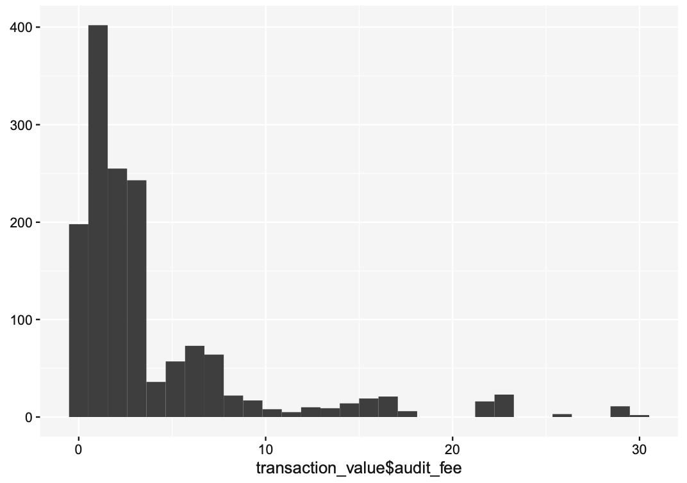
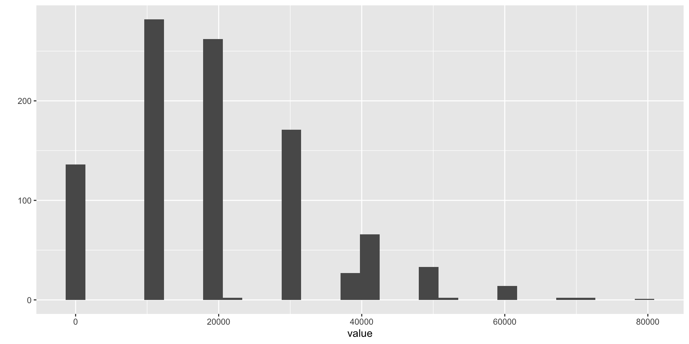
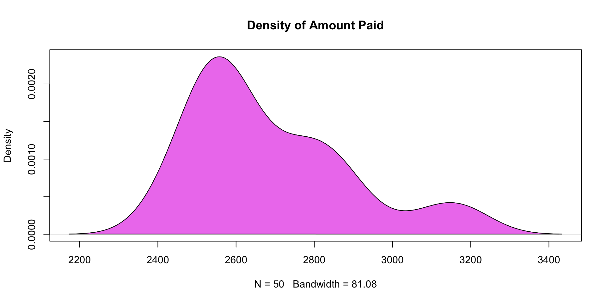
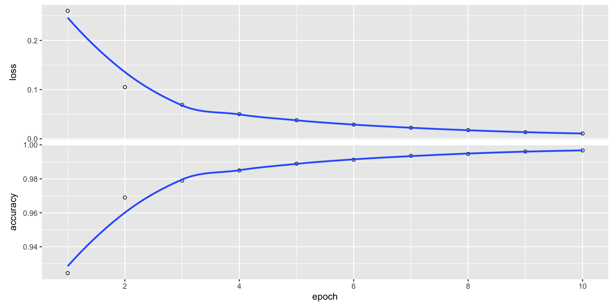

pacman::p_load(tidyverse, auditanalytics, knitr, kableExtra)外国書購読 Day3
Analysis of Accounting Transactions
Soichi Matsuura
review of Day2
Big Data
The R language uses 4 storage formats for data:
- vectors
- matrix
- data frames
- factors
準備
In order to use packages, you use the pacman package to install and load the necessary packages.
tidyverseis a collection of R packages designed for data science.auditanalyticsis a package that provides data in this class.knitris a package for dynamic report generation in R.kableExtrais a package for creating tables in R Markdown.
big_data <- read_csv(
system.file("extdata", "ch1_amount_data.csv",
package = "auditanalytics", mustWork = TRUE)
)
head(big_data)# A tibble: 6 × 6
year transient financial text multimedia mobile
<dbl> <dbl> <dbl> <dbl> <dbl> <dbl>
1 1930 0 323436613. 332755554. 0 0
2 1932 0 397718380. 481387776. 0 0
3 1934 0 716513950. 692322681. 0 0
4 1936 0 1887577972. 2621529575. 0 0
5 1938 0 3395111970. 3223325972. 0 0
6 1940 0 9167974599. 9663220031. 0 0big_data <- big_data |>
pivot_longer( # wide to long
cols = c(-year), # year column is not included
names_to = "data_type",
values_to = "value"
)
head(big_data)# A tibble: 6 × 3
year data_type value
<dbl> <chr> <dbl>
1 1930 transient 0
2 1930 financial 323436613.
3 1930 text 332755554.
4 1930 multimedia 0
5 1930 mobile 0
6 1932 transient 0 pivot_longer() is a function from tidyverse that replaces columns with indicators, and is used here to gather multiple lines on a single graph./
Graph : Growth of Stored Data
expand for full code
big_data$amount <- sqrt(big_data$value)
big_data %>%
ggplot() + aes(x = year, y = amount, col = data_type) +
geom_point(aes(color = data_type, size = amount), alpha = 0.5) +
scale_size(range = c(0.5, 12)) +
scale_y_continuous(trans = "sqrt") +
xlim(1990,2020) + xlab("Year") +
ylab("Number of Bits of Storage")
Vectors
You can make a vector using c() function.
Example: Vectors
Vector Operations
Refer to elements of a vector using subscripts.
Matrix
All columns in a matrix must have the same mode and the same length. Transfer the vector to a 5 \times 5 matrix .
If you want to fill the matrix by rows, use byrow = TRUE
Inverse Matrix and Determinant
Next, you try to solve the inverse matrix with solve() and calculate the determinant of the matrix with det().
[,1] [,2] [,3]
[1,] 41 77 57
[2,] 26 66 48
[3,] 9 93 33 [,1] [,2] [,3]
[1,] 0.10132979 -0.12234043 0.002925532
[2,] 0.01888298 -0.03723404 0.021542553
[3,] -0.08085106 0.13829787 -0.031205674[1] -22560Extract elements from a matrix using subscripts.
data.frame and tibble
A data frame is more general than a matrix, in that different columns can have different modes (numeric, character, factor, etc.).
Data frames represent the most widely used format for data storage and retrieval in the R language
Type
data.frameis like a spreadsheet of Excel. Column means variable and row means observation.
Create a data frame
Example: Data Frame
List
- An ordered collection of objects (components).
- A list allows you to gather a variety of objects under one name.
Example: list
Factors
- Tell R that a variable is nominal by making it a factor.
- The factor stores the nominal values as a vector of integers in the range [1, \dots , k ] (where k is the number of unique values in the nominal variable), and an internal vector of character strings (the original values) mapped to these integers.
Make factors
Nominal variables are those that represent discrete categories without any intrinsic order.
Ordered Factors
Ordered factores are those that represent discrete categories with an intrinsic order.
Useful Functions for Dataset Inspection and Manipulation
コード
| scope | ben_1 | cost_1 | ben_2 | cost_2 | ben_3 | cost_3 | ben_4 | cost_4 | ben_5 | cost_5 |
|---|---|---|---|---|---|---|---|---|---|---|
| 1 | 810 | 500 | 940 | 440 | 140 | 130 | 190 | 170 | 20 | 10 |
| 2 | 1370 | 890 | 1610 | 1010 | 3970 | 2770 | 3430 | 2460 | 3020 | 2650 |
| 3 | 9070 | 4850 | 6190 | 3250 | 5710 | 3590 | 7650 | 5360 | 7970 | 5220 |
| 4 | 4720 | 2400 | 4650 | 3950 | 330 | 260 | 2120 | 1580 | 2600 | 2020 |
| 5 | 8650 | 4830 | 9100 | 4060 | 5090 | 3480 | 8400 | 7540 | 5930 | 4610 |
Data Inspection
Analysis of Accounting Transactions
audit precedures and accounting cycle
- Audit procedures are designed around the accounting cycles.
- There are both practical and theoretical reasons for this.
- The accounting cycles define the particular processing of transactions, and interim tests (暫定的検証) focus entirely on particular transactions and their processing.
- The same economic event will be reflected in multiple transactions, and there are economies in designing audits around this fact.
- In substantive year-end tests (実証手続), the income statement accounts are transaction based, and their accurate estimation depends on understanding the accounting cycles.
PCAOB
Guidance from the PCAOB’s AS 2100 through 2600 can be used to structure the sampling and analysis decision-making in an audit:
- Planning and risk assessment phase : Using the audit risk assessment matrix, determine which transaction flows will have predicted error rates(予想逸脱率) greater than tolerable rate(許容逸脱率), or predicted error amounts greater than tolerable misstatement amount.
- Their function is to provide the foundation for determining initial audit scope, the budget and predicted contract cost of the audit, and for selecting particular audit tests that will be performed.
- This work typically uses little or no transaction data from the client, rather relies on the prior years audit conclusions and tests, benchmarks from similar firms in the client’s industry and available audit resources.
Interim compliance tests (tests of transaction, mid-year tests) (運用評価手続) : Each significant transaction processing step may potentially be tested, but the audit program typically restricts scope of the interim tests to those found to be “at risk” in the planning and risk assessment phase of the audit. Where risk assessment matrix predictions exceed tolerable rates or amounts, plan to use attribute sampling (to find actual rate of error); for other tests, use discovery sampling to detect the possibility that error rate might be intolerable.
Substantive tests (実証手続) : Substantive tests assess the probability of material error (重要な虚偽表示) in the accounts summarized in the various financial reports distributed to shareholders. Based on error rates discovered in interim compliance tests (and reported in the internal control memo) and expand the minimum tests of monetary balances on the trial balance.
- Corporate accounting systems are universally implemented on computer systems today—either in-house systems, or increasingly through service bureaus and software as a service (SaaS) infrastructure.
- Auditing is fundamentally about drawing conclusions on the financial statement balances (which are summary statistic) from detailed investigations of individual accounting transactions.
- Since both balances and transactions are recorded in the computer databases today, audit sampling can only be completed with computer programs.
- Additionally, corporations are retaining more accounting data than ever, partly because of new regulations from e.g. Sarbanes–Oxley, and partly because investors value more information, and corporations strive to provide it.
- Though this creates some up-front costs for auditors, it also makes the selection, audit, and analysis of transaction samples much more efficient. The following provides the basic statistics that you need to understand to properly conduct an audit—either test of transaction (mid- year, internal control) or substantive (year-end, balance) tests.
The Origin of Accounting Transactions
Accounting Transaction
- Accounting transactions begin as real-world events involving a firm — processes like sales that are localized in value, time, and space.
- The vast majority of these events are irrelevant to accountants — events that have no impact on the wealth of the firm.
- Eligibility for an event to become an accounting transaction is determined by commercial law — whatever events will create income, financial obligations, or financial allocations are likely to become accounting transactions.
- The route from event to accounting transaction involves three components :
The Origin of Accounting Transactions
The definition of the boundaries of the firm. Thus the same event may be an accounting transaction on a divisional financial statement, but will not be incorporated into the consolidated financial statements.
The relevant commercial law applying to the event-transaction. Often this pertains to the definition of “ownership” of an asset, or “obligation” for a promise, warranty, or contract.
The capture system for recording the event-transaction. Auditor responsibility for capture of transactions has expanded significantly over the past two decades, particularly with the Sarbanes–Oxley Act of 2002. Firms are expected to have capture systems to assure that where there is a legal ownership or liability, that it shows up in the accounting reports.
Chart of Accounts
- Once an event has successfully bridged the transition from real world to captured and recorded accounting transaction, it needs a name and a sign.
- This is the responsibility of the “Chart of Accounts”.
- The Chart of Accounts is an artificial categorization system that is set up by the firm’s controller or financial executive.
- It varies from firm to firm, reflecting the idiosyncrasies of the firm’s particular business.
- There are general guidelines for constructing any Chart of Accounts, guided by generally accepted accounting principles (GAAP) and needed to assure that investors can easily compare investment in one firm with another.
- High volume transactions such as sales and payroll will have their own journals - today these are typically computer systems dedicated to processing a single type of transaction.
- Less common transactions may receive less attention, and thus may be more error prone.
- In addition, there may be specific idiosyncrasies of GAAP that modify the application and interpretation of any of these four filters.
- Thus when auditors speak of a “transaction stream” (取引のフロー) they are fundamentally referencing some real-world event located in time, space, and value, but which has been processed through a set of filters:
The Five Filters
- capture. 取引の識別
- legal ownership and valuation. 法的な所有権と評価
- firm boundaries. 企業の境界
- classification. 分類
- GAAP. GAAP
- This complexity is fundamental to process of accounting, and is necessary for assuring that stakeholders have informative and comparable financial statements.
- The remainder of the accounting process is a matter of stylized summarization of the transactions processed through these filters.
- The summarization is inherently linear-additive with a few non-linear exceptions applied to allocations over time or output.
- Sadly, the most consequential part of accounting - this five stage filtering process - is also the part that receives very little formal attention in auditing.
Audit Tests as Learning Models
Auditing may be seen as a sequence of evidence collection and analyses that help the auditor learn enough to render an opinion. Conceptually, the tests involve a sequence of inferences:
Audit planning will have set scope and sample size values for audit tasks that in general ‘seek to discover’ (i.e., discovery sampling) whether or not transaction processing is or is not in control. This is usually stated as an assessment of error rates rather than dollar magnitudes of error.
If errors are discovered in a particular transaction flow, then sufficient additional evidence (十分な追加的監査証拠) must be gathered to assess the rate of error occurrences in the transaction flow (i.e., attribute sampling).
Transaction flows with error rates that are sufficiently high to be deemed “out-of-control” (i.e., intolerable from the audit perspective) are listed on the Internal Control Memo generated at the end of the Interim compliance audit.
Financial statement account balances affected by any transaction flows with error rates that are sufficiently high to be deemed “out-of-control” will have their sample sizes in the audit program for year-end substantive tests adjusted to assure an accurate assessment of the existence of material error in the audited financial statements.
- Various ad hoc and formal models have been proposed for the gradual accumulation of knowledge of the accounts throughout the audit.
- My own preference is for systems of audit task evidence accumulation modeled as Bayesian conjugate priors.
- The most general of these involves the Gamma distribution, but we will simplify some of the steps using the simpler one-parameter Poisson distribution.
- Both distributions take on values on the positive quadrant, and thus are more suitable for modeling accounting distributions than the Normal distribution.
Working with Dates
- Time is an essential component of auditing.
- Income statement accounts represent sums of transactions within strictly set periods, and balance sheet accounts are stated at a specific time.
- Transactions are always time-stamped, and the internal control, processing and auditing of client systems are heavily dependent on timing of transactions.
lubridate packages
- The
lubridatepackage makes it easier to do the things R does with date-times and possible to do the things that Base-R does not. lubridateis included intidyversepackage now.- We can use these functions:
ymd()，mdy()，dmy()etc.
Other funcitons in lubridate packages
A simple function to get and set elements of a date-time, year(), month(), mday(), etc.
with_tz() and force_tz()
Helper functions for handling time zones in lubridate: with_tz(), force_tz().
[1] "2010-12-13 15:30:30 UTC"[1] "2010-12-13 09:30:30 CST"[1] "2010-12-13 15:30:30 CST"timezoneに合わせて時刻も変換したい場合はwith_tz()，timezoneだけを置き換えたい場合はforce_tz()
lubridate operations
The lubridate also expands the type of mathematical operations that can be performed with date-time objects, and defines three time span classes that play roles in auditing:
- durations, which measure the exact amount of time between two points
- periods, which accurately track clock times despite leap years, leap seconds, and day light savings time
- intervals, a protean summary of the time information between two points
Example of lubridate operations
Accounting Transactions
Accounting Transactions for Auditors
- Accounting transactions are the raw data in an accounting system.
- They represent measurements of economic events such as sales or purchases, that cross the border of the firm.
- Transactions are “measured” and “recorded” on journal entries, the documents of original entry.
- Journal entries were originally simply reminders and descriptive notes recorded in a journal book.
- But with more formal, mathematical developments in accounting, they evolved into their current form of documents of original entry.
20th Century Developments in Accounting
- Before the twentieth century, accounting was concerned mainly with computing the asset value of the firm, and focused on economic events that made the firm richer or poorer.
- The twentieth century saw a transition to a more holistic perspective, where transactions were recorded to track, in addition to wealth, managerial performance, and stakeholder interests.
- We are not limited to dollar levels of resolution; annual reports may use thousands or millions of dollars as their level of resolution.
- Additionally, accounting and double-entry bookkeeping are methods of generating summarizations of transactions, and these often take the form of value \times quantity statistics.
The Histogram of Accounting Transactions
- In the histogram below which was constructed from a real-world transaction journal, we use
qplot()to produce a histogram of discrete transaction values at a resolution of one dollar. - The level of resolution determines the number of histogram bins, in this case 30.
- Human cognition tends to be overwhelmed by large numbers of bins, which is why we often see financial statistics summarized at levels of resolution larger than one dollar (Fig. 1).
Fig. 1. Histogram of Accounting Transactions
Figure 1
- This histogram displays several characteristics commonly seen in actual transaction probability distributions:
- the distribution is left-bounded at zero.
- the distribution may be zero-inflated, i.e., it may have a substantial number of zero measurements.
- the distribution is multimodal, with a succession of value clusters trailing off to the right.
First characteristics
- The first characteristic is built into accounting systems by design; account entries should not contain negative values.
- This convention goes back to the birth of accounting.
- In ninth century Baghdad, Al-Khwarizmi solved linear and quadratic equations using algebraic methods derived from the work of the Indian mathematician Brahmagupta, who invented negative numbers.
- In his treatise on the laws of inheritance (where the double-entry system was first published) Al-Khwarizmi instructed his readers to represent negative quantities as debts - i.e., contra-accounts.
Second Characteristics
- The second characteristic reflects the existence of “convenience” transactions that record an economic event that has no effect on firm wealth.
- These could reflect estimates, adjustments, or other ad hoc entries.
- The final characteristic is most interesting.
- Transactions may be produced by several independent processes, perhaps representing different locations, product values, or other factor.
- Another explanation arises from the mathematics of many transaction amounts - the unit price times the number of items in the transaction.
Even where values and quantities are unimodally distributed, their product can be multimodal, as is seen in the following graph (Fig. 2).
The Central Limit Theorem and Accounting
- Because accounting systems use linear operators, and summation is central to most accounting computations, it is natural to assume - when sampling, summarizing, or estimating errors - that errors are Normally distributed, because of the Central Limit Theorem (CLT).
- The CLT provides useful approximations, and is appropriate in many situations.
- Audit decisions tend to focus on the existence of material misstatements, which limit them to the upper tail.
- Being able to more accurately characterize accounting distributions that matter allows the auditor to potentially reduce sample sizes, and lower the cost of auditing.
Couching Institutional Language in Statistical Terms
- Generally, auditing assumes underlying Gaussian distributions of account and transaction values.
- Gaussian assumptions are made for convenience, and there has been no clear evidence to date this assumption is unreasonable.
- Auditors are concerned with the potential errors in audit decision-making that can arise from mis-classifying audit asset and transaction distributions.
- If these are large, then auditors are either collecting more evidence than needed (driving up audit costs) or unnecessarily incurring additional risk of an incorrect audit opinion (and thus potential litigation).
The AICPA defines two aspects to sampling risk when performing tests of controls:
- The risk of assessing control risk too low represents the risk that an audit sample supports the conclusion that the design and operation of an internal con rol is effective when in fact it is not.
- The risk of assessing control risk too high represents the risk that an audit sample supports the conclusion that the design and operation of an internal control is not effective when in fact it is effective.
The AICPA defines two aspects to sampling risk when performing substantive tests:
- The risk of incorrect acceptance represents the risk that an audit sample supports the conclusion that a material misstatement does not exist when in fact a material misstatement does exist. This risk is similar to the risk of assessing control risk too low.
- The risk of incorrect rejection represents the risk that an audit sample supports the conclusion that a material misstatement exists when in fact a material misstatement does not exist. This risk is similar to the risk of assessing control risk too high.
- Ultimately, an audit must provide shareholders in publicly traded securities an independent verification of the “fairness” of accounting reports.
- Audit procedures are dictated by two objectives: cost efficiency in data collection and analysis, and “fairness” in reporting.
- Fairness is generally interpreted as absence of “material error” in the accounting reports.
- For audits performed by an outside audit firm, risk assessment is a very crucial stage before accepting an audit engagement.
- Evidence relating to the auditor’s risk assessment of a material misstatement in the client’s accounting statements.
- Then, the auditor obtains initial evidence regarding the classes of transactions at the client and the operating effectiveness of the client’s internal controls.
- In auditing, audit risk includes inherent risk (IR), control risk (CR), and detection risk (DR).
The Audit Risk Model
- The audit risk model expresses the risk of an auditor providing an inappropriate opinion of a commercial entity’s accounting statements and is calculated: AR = IR \times CR \times DR .
- In this formula, IR refers to the risk involved in a business or transaction.
- CR refers to the risk that a misstatement could occur but may not be detected and corrected or prevented by entity’s internal control mechanism.
- DR is the probability that the audit procedures may fail to detect existence of a material error or fraud.
- While CR depends on the strength or weakness of the internal control procedures, DR is either due to sampling error or human factors.
Due to the breadth of qualitative and quantitative material that analytical procedures consider, audit risk models have typically been interpreted as abstract heuristics that provide a framework for auditor judgment, but not methods to explicitly process the external data.
But this need not be the case, as there are formal statistical models for assessment of financial reports using external data used by investors.
- The most influential of these is the efficient markets hypothesis (EMH) which states that asset prices reflected in these markets fully reflect all available information, and provides a strong motivation for reliance on asset markets for decision-making.
- The distribution of abnormal returns in US asset markets provides complete and unbiased information about corporate performance.
- From the auditor’s perspective, in acquiring plausible financial and non-financial evidence prior to and during actual fieldwork, inexpensive evidence that can fully reflect all available information about a firm and the industry in which it operations should be extremely attractive.
- Analytical procedures incorporating information-rich asset market statistics hold the potential to substitute for increased audit scope or risk without incurring additional fieldwork.
- Tests of market efficiency have typically been carried out jointly with the Capital Asset Pricing Model (CAPM).
- Both market efficiency and audit models in practice favor an assumption that transaction time series are Gaussian distributed.
- Decision makers understand that this is only an approximation of reality, but it is often considered “good enough” with the Central Limit Theorem (CLT) commonly invoked as justification.
Transaction Samples and Populations
Auditing depends heavily on sampling to control the cost of auditing.
- A statistical sample is a subset of the population.
- The population is all of the transactions relevant to a particular audit or procedure.
- Audit samples are usually several orders of magnitude smaller than the population.
Sampling Bases
- The sampling base or metric is the unit used to draw the sample.
- Monetary unit sampling (one dollar is a sample item) is applied at year end for substantive testing—determining whether the financial statement account balances contain material errors.
- Transaction or Record sampling (one accounting transaction is a sample item) is applied prior to year-end for internal control testing - determining whether the inherent level of transaction processing error risk that exists in each accounting cycle.
Sampling Guidelines
The AICPA provides guidelines on sampling in several standards:
- Risk assessment standards (SAS Nos. 104-111).
- Defining Professional Requirements Standard (SAS No. 102).
- Guidance on audit documentation (SAS 103).
- Communicating internal control related matters (SAS 112 and SAS 115).
- Audit Risk Alerts such as Communicating Internal Control Related Matters in an Audit—Understanding SAS No. 115 These discuss several approaches to the audit sampling process.
- Statistical audit sampling in tests of controls and for substantive tests of details.
- Non-statistical audit sampling in tests of controls and for substantive tests of details.
- Monetary unit sampling.
- Attribute sampling.
- Multi-location sampling considerations.
Audit and Accounting Manual for SMEs
Additionally, the AICPA Audit and Accounting Manual addresses problems in small- and medium size CPA practices.
It explains engagement steps from planning, to performing procedures, to issuing reports:
Guidance on internal controls.
Audit documentation guidelines.
Illustrative confirmation letters.
Illustrative engagement and representation letters.
Illustrative auditor’s reports.
Types of Sampling
The AICPA discusses the following types of sampling in drawing conclusions from audit evidence.
- Judgmental sampling : Items are audited based on personal hunches and convenience involving a subjective selection of items for testing and a subjective evaluation of the results.
- Random sampling : Applies random number generators to assure that each population unit or item has an equal probability of being selected for the sample.
- Fixed-interval sampling : Specify an interval and a random starting point which must be greater than zero and less than or equal to the selection interval.
- Random-interval sampling :Specify an interval and a random seed which is the basis for a series of pseudo-random numbers.
Conditional sampling : Apply a condition to subject only a portion of the population to selection.
Stratified sampling : A process of dividing a population in subgroups each of which is a set of sampling units with similar characteristics.
Transaction or Record sampling : Treat seach recorded transaction equivalently.
Monetary Unit Sampling : Treats each recorded dollar equivalently.
Estimation sampling : Sampling with an objective to estimate the proportion of errors to see if it is less than some acceptable level.
Acceptance sampling : Sampling with an objective to reject or accept the population under certain conditions.
Discovery sampling : Sampling with an objective to determine if the population is error free.
Accounting Cycles
An accounting cycle begins when accounting personnel create a transaction from a source document and ends with the completion of the financial reports and closing of temporary accounts in preparation for a new cycle. The five accounting cycles are:
- Revenue cycle.
- Sales orders,
- Cash receipts.
- Expenditure cycle. This cycle focuses on two separate resources; inventory and human resources.
- Inventory / purchasing;
- Accounts payable;
- Payroll;
- Cash payments.
- Conversion cycle (Production cycle).
- Production;
- Cost accounting.
- Financing (Capital Acquisition and repayment).
- Borrowing/repayment;
- Issuing stock;
- Dividends;
- Cash management.
- Fixed assets.
Substantive Test
- The purpose of substantive procedures is to provide audit evidence as to the completeness, accuracy, and validity of the information contained in the accounting records or in the financial statements.
- Substantive testing involves detailed examination of the monetary value of the account balances to determine their accuracy and to draw conclusions about the materiality of the error amounts in the accounts.
- The extent and nature of substantive testing depends upon the decision taken about the effectiveness of the systems of internal control.
- In substantive testing, statistical sampling is used to obtain monetary estimates of the total error amount or confidence limits for the total error amount in a particular account.
- The objective is to obtain reliable confidence limits.
Metrics and Estimates
- Statisticians estimate; business analysts measure.
- Statisticians often use the terms statistic and estimate for values calculated from the data, to draw a distinction between interpretations of the data, and the “true” state of affairs.
- Data scientists and business analysts are more likely to refer to such values as a metric.
- The difference reflects the approach of statistics versus data science: accounting for uncertainty lies at the heart of the discipline of statistics.
Audit and Statistics
In the past, the auditors initial step when confronted with a new database is to “foot” the dataset (i.e., compute a total) and “agree” that total to the client’s records (i.e., see whether client’s records agree with the computed total). This is done with the “sum” command in R.
disbursement_no date amount_paid
Length:50 Length:50 Min. :2417
Class :character Class :character 1st Qu.:2537
Mode :character Mode :character Median :2618
Mean :2686
3rd Qu.:2800
Max. :3190
支払帳の合計金額 = 134313.5R has a number of packages that generate basic statistics fromt the data, beyond that of the built-in summary command Here are three of the most useful, applied to our banking industry dataset.
library(Hmisc) # 記述統計量の計算
bank_fin <- read.csv(system.file(
"extdata", "ch_2_yahoo_fin.csv",
package = "auditanalytics", mustWork = TRUE)
)
Hmisc::describe(bank_fin) # Show summary statisticsbank_fin
9 Variables 38 Observations
--------------------------------------------------------------------------------
ticker
n missing distinct
25 13 25
lowest : BAC-PC BAC-PE BAC-PK BAC-PL BAC-PY, highest: WFC-PR WFC-PV WFC-PW WFC-PX WFC-PY
--------------------------------------------------------------------------------
name
n missing distinct
25 13 7
lowest : Banco Santander, S.A. GTD PFD SECS 6 Bank of America Corporation Berkshire Hathaway Inc. HSBC Holdings plc ADR A 1/40PF A JPMorgan Chase & Co.
highest: Berkshire Hathaway Inc. HSBC Holdings plc ADR A 1/40PF A JPMorgan Chase & Co. Visa Inc. Wells Fargo & Company
--------------------------------------------------------------------------------
price
n missing distinct Info Mean Gmd .05 .10
25 13 25 1 12231 24374 22.38 22.93
.25 .50 .75 .90 .95
25.70 26.45 28.66 935.15 1437.69
Value 0e+00 3e+05
Frequency 24 1
Proportion 0.96 0.04
For the frequency table, variable is rounded to the nearest 5000
--------------------------------------------------------------------------------
change
n missing distinct
26 12 22
lowest : -0.01 -0.03 -0.04 -0.06 -0.07
highest: 0.14 1.10 1.92 2631.00 ticker
--------------------------------------------------------------------------------
percent_change
n missing distinct Info Mean Gmd .05 .10
25 13 23 0.999 0.2016 0.4513 -0.268 -0.252
.25 .50 .75 .90 .95
-0.110 0.180 0.410 0.740 0.952
lowest : -0.48 -0.27 -0.26 -0.24 -0.19, highest: 0.44 0.53 0.88 0.97 1.02
--------------------------------------------------------------------------------
volume
n missing distinct Info Mean Gmd .05 .10
25 13 25 1 520349 939507 4340 5020
.25 .50 .75 .90 .95
20982 34142 80933 1267169 3278800
lowest : 243 4284 4566 5700 11997
highest: 89764 140922 2018000 3594000 6506000
--------------------------------------------------------------------------------
vol_ave
n missing distinct Info Mean Gmd .05 .10
25 13 25 1 935629 1706024 6093 7569
.25 .50 .75 .90 .95
29831 44849 85711 2347830 6281000
Value 0 100000 3700000 6900000 11400000
Frequency 19 3 1 1 1
Proportion 0.76 0.12 0.04 0.04 0.04
For the frequency table, variable is rounded to the nearest 100000
--------------------------------------------------------------------------------
capitalization
n missing distinct
25 13 25
lowest : 211.288B 212.921B 214.807B 215.543B 216.366B
highest: 368.674B 403.496B 492.962B 493.498B 541.154B
--------------------------------------------------------------------------------
pe_ratio
n missing distinct Info Mean Gmd .05 .10
25 13 25 1 43.2 71.1 2.846 3.834
.25 .50 .75 .90 .95
5.440 7.430 11.120 53.596 249.240
Value 0 5 10 15 30 45 55 295 505
Frequency 3 15 1 1 1 1 1 1 1
Proportion 0.12 0.60 0.04 0.04 0.04 0.04 0.04 0.04 0.04
For the frequency table, variable is rounded to the nearest 5
--------------------------------------------------------------------------------Bank Financial Data
The describe and describeBy functions of the psych package offer rich reporting of summary statistics, though much of this may be superfluous in auditing.
vars n mean sd median trimmed mad min
ticker* 1 38 9.55 8.61 7.50 8.91 9.64 1.00
name* 2 38 4.05 2.89 3.00 3.97 2.97 1.00
price 3 25 12231.23 60356.40 26.45 112.41 1.93 20.88
change* 4 38 8.84 7.52 7.50 8.34 9.64 1.00
percent_change 5 25 0.20 0.39 0.18 0.18 0.37 -0.48
volume 6 25 520348.92 1480580.79 34142.00 138295.05 32832.18 243.00
vol_ave 7 25 935628.64 2678595.35 44849.00 237653.14 45797.51 245.00
capitalization* 8 38 9.55 8.61 7.50 8.91 9.64 1.00
pe_ratio 9 25 43.20 113.07 7.43 12.99 3.16 0.01
max range skew kurtosis se
ticker* 26.00 25.00 0.47 -1.30 1.40
name* 8.00 7.00 0.30 -1.61 0.47
price 301936.00 301915.12 4.42 18.23 12071.28
change* 23.00 22.00 0.37 -1.40 1.22
percent_change 1.02 1.50 0.41 -0.63 0.08
volume 6506000.00 6505757.00 3.01 8.48 296116.16
vol_ave 11488000.00 11487755.00 2.90 7.68 535719.07
capitalization* 26.00 25.00 0.47 -1.30 1.40
pe_ratio 506.93 506.92 3.19 9.35 22.61Bank Financial Data by Group
Descriptive statistics by group
group:
vars n mean sd median trimmed mad min max range skew kurtosis
ticker 1 13 1.00 0.0 1 1 0 1 1 0 NaN NaN
name 2 13 1.00 0.0 1 1 0 1 1 0 NaN NaN
price 3 0 NaN NA NA NaN NA Inf -Inf -Inf NA NA
change 4 13 2.69 6.1 1 1 0 1 23 22 2.82 6.44
percent_change 5 0 NaN NA NA NaN NA Inf -Inf -Inf NA NA
volume 6 0 NaN NA NA NaN NA Inf -Inf -Inf NA NA
vol_ave 7 0 NaN NA NA NaN NA Inf -Inf -Inf NA NA
capitalization 8 13 1.00 0.0 1 1 0 1 1 0 NaN NaN
pe_ratio 9 0 NaN NA NA NaN NA Inf -Inf -Inf NA NA
se
ticker 0.00
name 0.00
price NA
change 1.69
percent_change NA
volume NA
vol_ave NA
capitalization 0.00
pe_ratio NA
------------------------------------------------------------
group: Banco Santander, S.A. GTD PFD SECS 6
vars n mean sd median trimmed mad min max range
ticker 1 1 15.00 NA 15.00 15.00 0 15.00 15.00 0
name 2 1 2.00 NA 2.00 2.00 0 2.00 2.00 0
price 3 1 22.72 NA 22.72 22.72 0 22.72 22.72 0
change 4 1 12.00 NA 12.00 12.00 0 12.00 12.00 0
percent_change 5 1 0.18 NA 0.18 0.18 0 0.18 0.18 0
volume 6 1 11997.00 NA 11997.00 11997.00 0 11997.00 11997.00 0
vol_ave 7 1 19388.00 NA 19388.00 19388.00 0 19388.00 19388.00 0
capitalization 8 1 20.00 NA 20.00 20.00 0 20.00 20.00 0
pe_ratio 9 1 49.93 NA 49.93 49.93 0 49.93 49.93 0
skew kurtosis se
ticker NA NA NA
name NA NA NA
price NA NA NA
change NA NA NA
percent_change NA NA NA
volume NA NA NA
vol_ave NA NA NA
capitalization NA NA NA
pe_ratio NA NA NA
------------------------------------------------------------
group: Bank of America Corporation
vars n mean sd median trimmed mad min
ticker 1 7 5.00 2.16 5.00 5.00 2.97 2.00
name 2 7 3.00 0.00 3.00 3.00 0.00 3.00
price 3 7 224.31 529.23 25.78 224.31 3.77 20.88
change 4 7 6.43 4.31 5.00 6.43 2.97 3.00
percent_change 5 7 -0.11 0.24 -0.19 -0.11 0.12 -0.27
volume 6 7 33409.00 29580.81 32345.00 33409.00 32341.44 4566.00
vol_ave 7 7 41777.29 34055.28 29831.00 41777.29 35695.08 5755.00
capitalization 8 7 15.00 2.16 15.00 15.00 2.97 12.00
pe_ratio 9 7 79.83 188.34 9.17 79.83 1.33 7.43
max range skew kurtosis se
ticker 8.00 6.00 0.00 -1.71 0.82
name 3.00 0.00 NaN NaN 0.00
price 1424.47 1403.59 1.62 0.80 200.03
change 15.00 12.00 0.98 -0.63 1.63
percent_change 0.41 0.68 1.37 0.28 0.09
volume 86124.00 81558.00 0.56 -1.25 11180.50
vol_ave 85711.00 79956.00 0.18 -2.02 12871.69
capitalization 18.00 6.00 0.00 -1.71 0.82
pe_ratio 506.93 499.50 1.62 0.80 71.18
------------------------------------------------------------
group: Berkshire Hathaway Inc.
vars n mean sd median trimmed mad
ticker 1 2 9.50 0.71 9.50 9.50 0.74
name 2 2 4.00 0.00 4.00 4.00 0.00
price 3 2 151068.58 213358.75 151068.58 151068.58 223676.04
change 4 2 21.50 0.71 21.50 21.50 0.74
percent_change 5 2 0.92 0.06 0.92 0.92 0.07
volume 6 2 1009121.50 1426769.66 1009121.50 1009121.50 1495763.26
vol_ave 7 2 1890622.50 2673397.50 1890622.50 1890622.50 2802673.68
capitalization 8 2 24.50 0.71 24.50 24.50 0.74
pe_ratio 9 2 8.57 12.11 8.57 8.57 12.70
min max range skew kurtosis se
ticker 9.00 10.00 1.00 0 -2.75 0.50
name 4.00 4.00 0.00 NaN NaN 0.00
price 201.16 301936.00 301734.84 0 -2.75 150867.42
change 21.00 22.00 1.00 0 -2.75 0.50
percent_change 0.88 0.97 0.09 0 -2.75 0.04
volume 243.00 2018000.00 2017757.00 0 -2.75 1008878.50
vol_ave 245.00 3781000.00 3780755.00 0 -2.75 1890377.50
capitalization 24.00 25.00 1.00 0 -2.75 0.50
pe_ratio 0.01 17.14 17.13 0 -2.75 8.56
------------------------------------------------------------
group: HSBC Holdings plc ADR A 1/40PF A
vars n mean sd median trimmed mad min max range
ticker 1 1 11.00 NA 11.00 11.00 0 11.00 11.00 0
name 2 1 5.00 NA 5.00 5.00 0 5.00 5.00 0
price 3 1 26.45 NA 26.45 26.45 0 26.45 26.45 0
change 4 1 10.00 NA 10.00 10.00 0 10.00 10.00 0
percent_change 5 1 0.00 NA 0.00 0.00 0 0.00 0.00 0
volume 6 1 26376.00 NA 26376.00 26376.00 0 26376.00 26376.00 0
vol_ave 7 1 61496.00 NA 61496.00 61496.00 0 61496.00 61496.00 0
capitalization 8 1 26.00 NA 26.00 26.00 0 26.00 26.00 0
pe_ratio 9 1 56.04 NA 56.04 56.04 0 56.04 56.04 0
skew kurtosis se
ticker NA NA NA
name NA NA NA
price NA NA NA
change NA NA NA
percent_change NA NA NA
volume NA NA NA
vol_ave NA NA NA
capitalization NA NA NA
pe_ratio NA NA NA
------------------------------------------------------------
group: JPMorgan Chase & Co.
vars n mean sd median trimmed mad
ticker 1 3 13.00 1.00 13.00 13.00 1.48
name 2 3 6.00 0.00 6.00 6.00 0.00
price 3 3 54.84 46.66 28.05 54.84 0.44
change 4 3 12.67 9.45 16.00 12.67 5.93
percent_change 5 3 0.45 0.54 0.36 0.45 0.59
volume 6 3 2225376.33 3707131.82 89764.00 2225376.33 13934.96
vol_ave 7 3 3941765.67 6535296.89 198076.00 3941765.67 87258.42
capitalization 8 3 20.67 1.53 21.00 20.67 1.48
pe_ratio 9 3 5.61 4.77 2.87 5.61 0.04
min max range skew kurtosis se
ticker 12.00 1.4000e+01 2.00 0.00 -2.33 0.58
name 6.00 6.0000e+00 0.00 NaN NaN 0.00
price 27.75 1.0871e+02 80.96 0.38 -2.33 26.94
change 2.00 2.0000e+01 18.00 -0.31 -2.33 5.46
percent_change -0.04 1.0200e+00 1.06 0.16 -2.33 0.31
volume 80365.00 6.5060e+06 6425635.00 0.38 -2.33 2140313.55
vol_ave 139221.00 1.1488e+07 11348779.00 0.38 -2.33 3773155.42
capitalization 19.00 2.2000e+01 3.00 -0.21 -2.33 0.88
pe_ratio 2.84 1.1120e+01 8.28 0.38 -2.33 2.76
------------------------------------------------------------
group: Visa Inc.
vars n mean sd median trimmed mad min
ticker 1 1 16.00 NA 16.00 16.00 0 16.00
name 2 1 7.00 NA 7.00 7.00 0 7.00
price 3 1 180.07 NA 180.07 180.07 0 180.07
change 4 1 7.00 NA 7.00 7.00 0 7.00
percent_change 5 1 -0.48 NA -0.48 -0.48 0 -0.48
volume 6 1 3594000.00 NA 3594000.00 3594000.00 0 3594000.00
vol_ave 7 1 6906000.00 NA 6906000.00 6906000.00 0 6906000.00
capitalization 8 1 23.00 NA 23.00 23.00 0 23.00
pe_ratio 9 1 34.58 NA 34.58 34.58 0 34.58
max range skew kurtosis se
ticker 16.00 0 NA NA NA
name 7.00 0 NA NA NA
price 180.07 0 NA NA NA
change 7.00 0 NA NA NA
percent_change -0.48 0 NA NA NA
volume 3594000.00 0 NA NA NA
vol_ave 6906000.00 0 NA NA NA
capitalization 23.00 0 NA NA NA
pe_ratio 34.58 0 NA NA NA
------------------------------------------------------------
group: Wells Fargo & Company
vars n mean sd median trimmed mad min
ticker 1 10 21.50 3.03 21.50 21.50 3.71 17.00
name 2 10 8.00 0.00 8.00 8.00 0.00 8.00
price 3 10 167.96 447.30 26.42 26.63 0.90 25.58
change 4 10 14.60 3.57 15.50 14.88 3.71 8.00
percent_change 5 10 0.29 0.19 0.36 0.31 0.15 -0.07
volume 6 10 44811.50 39786.63 32546.00 37863.62 16703.71 4284.00
vol_ave 7 10 50484.90 35897.76 39847.00 44781.88 14567.29 7758.00
capitalization 8 10 6.50 3.03 6.50 6.50 3.71 2.00
pe_ratio 9 10 34.68 92.36 5.46 5.50 0.19 5.28
max range skew kurtosis se
ticker 26.00 9.00 0.00 -1.56 0.96
name 8.00 0.00 NaN NaN 0.00
price 1441.00 1415.42 2.28 3.57 141.45
change 19.00 11.00 -0.42 -1.31 1.13
percent_change 0.53 0.60 -0.56 -1.13 0.06
volume 140922.00 136638.00 1.31 0.62 12581.64
vol_ave 138836.00 131078.00 1.31 0.92 11351.87
capitalization 11.00 9.00 0.00 -1.56 0.96
pe_ratio 297.54 292.26 2.28 3.57 29.21If the auditor wishes to use summary statistics for further processing, these can be formatted into data frames using the tidy function in broom; alternatively, the data frames can be used to print formatted tables, which may be included in audit papers.
pacman::p_load(kableExtra, broom, pastecs) # パッケージの読み込み
## Tidy these up and write them as a formated table, using kableExtra
pastecs::stat.desc(bank_fin) |>
broom::tidy() |>
kable(longtable = T, caption = "Summary Statistics") |>
kable_styling(full_width = F, font_size = 18)| column | n | mean | sd | median | trimmed | mad | min | max | range | skew | kurtosis | se |
|---|---|---|---|---|---|---|---|---|---|---|---|---|
| ticker | 0 | NaN | NA | NA | NaN | NA | Inf | -Inf | -Inf | NA | NA | NA |
| name | 0 | NaN | NA | NA | NaN | NA | Inf | -Inf | -Inf | NA | NA | NA |
| price | 14 | 2.602796e+08 | 9.735837e+08 | 1.215125e+04 | 8.494124e+04 | 1.214879e+04 | 0.00 | 3.642895e+09 | 3.642895e+09 | 3.328201 | 12.076923 | 2.602012e+08 |
| change | 0 | NaN | NA | NA | NaN | NA | Inf | -Inf | -Inf | NA | NA | NA |
| percent_change | 14 | 3.515023e+00 | 7.098547e+00 | 6.972503e-01 | 2.057527e+00 | 5.799849e-01 | -0.48 | 2.500000e+01 | 2.548000e+01 | 2.331536 | 7.251627 | 1.897167e+00 |
| volume | 14 | 1.565820e+11 | 5.858680e+11 | 4.082325e+05 | 2.413592e+06 | 4.082246e+05 | 0.00 | 2.192119e+12 | 2.192119e+12 | 3.328201 | 12.076923 | 1.565798e+11 |
| vol_ave | 14 | 5.124946e+11 | 1.917564e+12 | 7.356739e+05 | 4.305602e+06 | 7.356659e+05 | 0.00 | 7.174873e+12 | 7.174873e+12 | 3.328201 | 12.076923 | 5.124906e+11 |
| capitalization | 0 | NaN | NA | NA | NaN | NA | Inf | -Inf | -Inf | NA | NA | NA |
| pe_ratio | 14 | 1.082288e+03 | 3.382558e+03 | 3.410240e+01 | 1.972988e+02 | 3.278888e+01 | 0.00 | 1.278445e+04 | 1.278445e+04 | 3.280235 | 11.874574 | 9.040266e+02 |
- However the auditor chooses to summarize a dataset, there are certain common statistics that will be generated.
- Count : How many transactions (or rows) does the dataset contain.
- Information : Potentially the maximum amount that the data can tell you about is the variability of a particular construct. In accounting transactions, the count of data is often not a good measure of information content. Accounting data is highly multicollinear - the same economic event (e.g., a sale) is repeatedly recorded in the data (e.g., as an account receivable of the same amount, as an inventory reduction of a related amount, as a collection, and so forth)
- Mean : The basic estimate of location. The arithmetic mean (or just mean) is the sum of all the values divided by the number of values.
- Trimmed mean : An arithmetic mean that removes a small designated percentage of the largest and smallest values before calculating the mean.
- Outlier : An outlier is any value that is very distant from the other values in a dataset. The exact definition of an outlier is somewhat subjective.
- Median : The median is the middle number on a sorted list of the data.
- Variance : The primary variability statistic (though less commonly used than standard deviation). It is the sum of squared deviations from the mean divided by n − 1 where n is the count.
- Deviations : (errors, residuals): The difference between the observed values and the estimate of location.
- Standard deviation : The square root of the variance. Standard deviation (sd) is more commonly used than variance, because its values are easy to compare to linear estimators such as the mean.
- Degrees of freedom (df): Another concept borrowed mechanics.
- Mean absolute deviation (mad, l1-norm, Manhattan norm): The mean of the absolute value of the deviations from the mean.
- Range : The difference between the largest (max) and the smallest (min) value in a dataset.
- Skew and Kurtosis : In statistics, third and fourth moments describe skewness and kurtosis.
Order statistics : Metrics based on the data values sorted from smallest to biggest.
Percentile (quantile) : The value such that p% of the values take on this value or less and (100 − p)% take on more than this value. The difference between the 75th percentile and the 25th percentile is called the interquartile range (IQR).
Correlation coefficient : A metric that measures the extent to which numeric variables are associated with one another (ranges from −1 to +1).
Scatterplot : A plot in which the x-axis is the value of one variable, and the y-axis the value of another.
Important Concepts in Probability and Statistics
- Probability distributions are models describing the variability of data or the underlying population from which the data is drawn.
- There are perhaps 50 or 60 different distributions that are used in characterizing population statistics, but only half a dozen are commonly used.
- Quite often when we refer to parametric statistics, we are making an assumption of Normal (Gaussian) distributions for the data.
- We will see later that this assumption may not be warranted for accounting and financial transactions.
- Normal (Gaussian) distribution : The bell-shaped normal distribution is iconic in traditional statistics. Related terms are:
- Standardization : Subtract the mean and divide by the standard deviation.
- z-score : The result of standardizing an individual data point.
- Standard normal : A normal distribution with
mean = 0and standard deviation = 1. - QQ-Plot : A quantile (of the sample) by quantile (of a Normal distribution) plot to visualize how close a sample distribution is to a Normal distribution.
QQ-Plot
Read the disbursement data ch_2_AP_disbursements_journal.csv and create a QQ-plot.
various distributions
- Binomial Distribution : A binomial distribution with parameters n and p is the discrete probability distribution of the number of successes in a sequence of n independent experiments A single success/failure experiment is also called a Bernoulli trial and a sequence of outcomes is called a Bernoulli process; for a single trial, the binomial distribution is a Bernoulli distribution.
- Bernoulli distribution : A Bernoulli distribution is the discrete probability distribution of a random variable which takes the value 1 with probability p and the value 0 with probability q = 1 − p.
Poisson distribution : the Poisson distribution is a discrete probability distribution that expresses the probability of a given number of events occurring in a fixed interval of time or space if these events occur with a known constant rate and independently of the time since the last event.
Density and Cumulative Distribution : Probabilities have densities (in continuous distributions such as the Normal) or mass functions (in the case of discrete distributions such as the Poisson) that describe the probability of a given outcome. Cumulative distribution functions describe the probability up to a given value.
Density and Cumulative Distribution
ecdf() is a function that computes the empirical cumulative distribution function of a dataset.
- Random Sampling and Sample Bias : A sample is a subset of data from a larger dataset; statisticians call this larger dataset the population — a large, defined but sometimes theoretical or imaginary set of data. –>
Central Limit Theorem : Proves that sums of independent variables asymptotically approach a Normal distribution as sample size goes to infinity.
Standard Error : This is roughly the standard deviation of the sample data. Standard deviation (which measures the variability of individual data points) is distinct from standard error (which measures the variability of a sample metric).
- Bootstrap and resampling : A bootstrap sample is taken with replacement from an observed dataset. Resampling takes repeated samples from observed data; includes both bootstrap and permutation (shuffling) procedures.
- Hypothesis Tests (significance tests): Hypotheses are ways of turning complex problems into yes/no questions. Most audit procedures can be couched as hypothesis tests. Here are some key concepts in hypothesis testing:
- p-value : In statistical hypothesis testing, the p-value or probability value is, for a given hypothesis test, the probability that, when the null hypothesis is true, the statistical summary (such as the sample mean difference between two groups) would be equal to, or more extreme than, the actual observed results. The use and misuse of p-values in statistical hypothesis testing has become a controversial topic.
- Confidence Intervals : Sampling leads to uncertain results, and that uncertainty is reduced through larger, higher quality samples. Confidence intervals are one way of describing the uncertainty of an estimate or prediction based on a sample.
- Null and Alternative hypotheses : Ways of dividing the decision space into two parts.
- One-way and two-way tests : Hypothesis test that considers one tail or two of the distribution.
- significance (alpha): Critical value for selecting one or the other hypothesis. This is the probability that you will make a type I error.
- power (1-beta): Critical value for selecting one or the other hypothesis. This is the probability that you will not make a type II error.
- t-test : An inferential statistic used to assess whether there is a significant difference between the means of two groups.
Overfitting : Most measurements, and all samples misrepresent, in some way, the population. There is always danger of fitting models to these misrepresentations, thus generating incorrect decisions. This is controlled by better sample size and quality, and also by resampling to ensure robustness of estimation.
Linear Regression : Fits a model of the relationship between a scalar response (or dependent variable) and one or more explanatory variables (or independent variables). The following example builds a linear regression model to test the occurrence of insider breaches with audit fees and auditor decisions on section 404 audits, using the Sarbanes–Oxley data.
Exploratory data analysis (EDA) using R’s plotluck package and ch_2_data_types.csv data file.
df <- read.csv(system.file(
"extdata", "ch_2_data_types.csv", # csv file
package = "auditanalytics", mustWork = TRUE))
# regression model OLS
lr <- lm(formula = insd ~ audit_fee + effective_404, data = df)
summary(lr) # 結果の表示
Call:
lm(formula = insd ~ audit_fee + effective_404, data = df)
Residuals:
Min 1Q Median 3Q Max
-0.1590 -0.1475 -0.1411 -0.1229 0.9292
Coefficients:
Estimate Std. Error t value Pr(>|t|)
(Intercept) 1.486e-01 1.325e-02 11.217 <2e-16 ***
audit_fee -9.521e-10 4.449e-10 -2.140 0.0325 *
effective_404 1.066e-02 1.816e-02 0.587 0.5574
---
Signif. codes: 0 '***' 0.001 '**' 0.01 '*' 0.05 '.' 0.1 ' ' 1
Residual standard error: 0.3449 on 1509 degrees of freedom
(2 個の観測値が欠損のため削除されました)
Multiple R-squared: 0.003242, Adjusted R-squared: 0.001921
F-statistic: 2.454 on 2 and 1509 DF, p-value: 0.08627- Since the dependent variable is dichotomous (binary), results can be improved by using a logit model (from the built-in glm function).
- The following example also showcases R’s analysis of the residual errors (differences between the dependent variable values, and the estimated model on the right-hand side).
- Leverage and distance provide measures of how particular transactions influence the estimation, and are important in identifying outliers.
lgt <- glm( # general linear method
formula = insd ~ audit_fee + effective_404, # 回帰モデル
family = "binomial", # link function
data = df) # data frame
summary(lgt) # 結果の表示
Call:
glm(formula = insd ~ audit_fee + effective_404, family = "binomial",
data = df)
Coefficients:
Estimate Std. Error z value Pr(>|z|)
(Intercept) -1.732e+00 1.128e-01 -15.354 <2e-16 ***
audit_fee -9.530e-09 4.496e-09 -2.120 0.034 *
effective_404 8.928e-02 1.518e-01 0.588 0.557
---
Signif. codes: 0 '***' 0.001 '**' 0.01 '*' 0.05 '.' 0.1 ' ' 1
(Dispersion parameter for binomial family taken to be 1)
Null deviance: 1214.8 on 1511 degrees of freedom
Residual deviance: 1209.4 on 1509 degrees of freedom
(2 個の観測値が欠損のため削除されました)
AIC: 1215.4
Number of Fisher Scoring iterations: 4Graph of the Logit Model
Machine Learning Methods
Over the past decade, very useful extensions to twentieth century statistical models have been provided by advances in machine learning, and in particular deep-learning. Deep learning is a branch of artificial intelligence that is computationally intensive, but highly flexible for inference from data. Inference is a decision $$ (estimation, prediction) based on data x \in X that hopefully contains information about a particular set of constructs. Inference may be about:
- Classification — e.g., identifying faces, threats.
- Estimation — e.g., a vector \theta = \{\theta_1, \dots , \theta_n\}.
- Other decisions that may or may not be carried out in real time; e.g., driving a car.
Goals of Machine Learning
- The implicit goal of machine learning is construction of decision strategies that minimize risk.
- Risk is an informal concept inherited from gambling, and roughly implies the expected loss from using a given decision strategy δ.
- Frequentist and Bayesian statisticians both base their decision strategies on real-world data, but sharply divided on the actual implementation and interpretation of decision risk.
- In practice, risk presents deep learning (and AI in general) with its greatest challenges.
- For example, self-driving cars are trained on massive datasets extracted from many other cars; that knowledge of how to drive is encapsulated in weights in a network model that is firm-wired into a computer unit in a car.
- It matters whether that unit was trained to save pedestrians, or to save property, or to save the driver—each implies a different decision risk.
- Traditionally, statistics have used a squared-error loss function l(\theta, \delta (X)) = \mathrm{E}_{\delta} [\delta (X) - \theta )^2] where \delta(X) = \hat{\theta} in the case of estimation.
- This is easy to compute using pencil and paper, particularly when optimization relied on first-order conditions from calculus.
- But most real-world decisions are not optimally made with squared-error loss functions.
- Although squared-error loss is still widely used, machine learning practitioners will also use more complex, sometimes asymmetric loss functions that more closely fit the real-world problems.
- Business situations prefer asymmetric loss that penalizes costs and rewards revenues.
Whereas traditional statistics relies heavily on first-order conditions from calculus, deep learning uses compute-intensive search algorithms that explore the response surface of the risk function.
The following example presents the “Hello World” of machine learning: recognizing handwritten numbers on the National Institute of Standards dataset.
keras
Examples below assume that Tensorflow is installed. See https://www.tensorflow.org/install/。
[1] "list"List of 2
$ train:List of 2
..$ x: int [1:60000, 1:28, 1:28] 0 0 0 0 0 0 0 0 0 0 ...
..$ y: int [1:60000(1d)] 5 0 4 1 9 2 1 3 1 4 ...
$ test :List of 2
..$ x: int [1:10000, 1:28, 1:28] 0 0 0 0 0 0 0 0 0 0 ...
..$ y: int [1:10000(1d)] 7 2 1 0 4 1 4 9 5 9 ...The MNIST database was constructed from NIST’s Special Database 3 and Special Database 1 which contain binary images of handwritten digits.
Construct a neural network model. Keras Model composed of a linear stack of layers.
network <- keras_model_sequential() # null model
network |>
# 28*28 pixel images are flattened into 784 pixel vectors
layer_dense(units = 512, input_shape = c(28 * 28)) |>
# ReLU activation function converts negative values to zero
layer_activation('relu') |> # ReLU activation function
layer_dense(units = 10) |> # 10 output layers 1:10
# softmax activation function convert the output to a probability distribution
layer_activation("softmax") # softmax activation functionSpecify the algorithm and function series.
Training and Test Data
# Training data
train_images <- array_reshape( # 行列に変換
train_images, # 訓練用画像データ
c(60000, 28 * 28) # 画像の形状
)
# Test data
test_images <- array_reshape( # 行列に変換
test_images, # テスト用画像データ
c(10000, 28 * 28) # 画像の形状
)
# 0が黒，255が白のデータを0-1の範囲に正規化
train_images <- train_images / 255
test_images <- test_images / 255Label data is one hot encoded.
to_categolical()takes a vector or 1 column matrix of class labels and converts it into a matrix with p columns, one for each category.(補足) 0〜9の手書き文字の大小関係は今回関係ないため，10個のカテゴリーを意味する10列の行列に変換してます。
Training the Model
history <- network |>
fit( # training the model
train_images, # training image data
train_labels, # training label data
epochs = 10, # the number of times the model will be trained
batch_size = 128 # the number of samples per gradient update
)Epoch 1/10
469/469 - 1s - loss: 0.2602 - accuracy: 0.9245 - 1s/epoch - 3ms/step
Epoch 2/10
469/469 - 2s - loss: 0.1051 - accuracy: 0.9690 - 2s/epoch - 3ms/step
Epoch 3/10
469/469 - 2s - loss: 0.0690 - accuracy: 0.9790 - 2s/epoch - 5ms/step
Epoch 4/10
469/469 - 2s - loss: 0.0500 - accuracy: 0.9850 - 2s/epoch - 5ms/step
Epoch 5/10
469/469 - 3s - loss: 0.0377 - accuracy: 0.9889 - 3s/epoch - 6ms/step
Epoch 6/10
469/469 - 2s - loss: 0.0288 - accuracy: 0.9912 - 2s/epoch - 4ms/step
Epoch 7/10
469/469 - 2s - loss: 0.0224 - accuracy: 0.9936 - 2s/epoch - 4ms/step
Epoch 8/10
469/469 - 2s - loss: 0.0177 - accuracy: 0.9947 - 2s/epoch - 5ms/step
Epoch 9/10
469/469 - 3s - loss: 0.0133 - accuracy: 0.9961 - 3s/epoch - 6ms/step
Epoch 10/10
469/469 - 2s - loss: 0.0107 - accuracy: 0.9967 - 2s/epoch - 3ms/stepPlot
model evaluation
keras model
- This particular Keras model overfits the MNIST data, with a final accuracy of 98% and loss of 7%.
Machine learning is a vast and rapidly evolving field. It is increasingly for the analysis of social network and other text based intelligence required for the analytical review portion (and other parts) of the audit. In the future, expect its role in auditing to expand, as suitable models are developed in the field.
Statistical Perspectives on Audit Evidence and its Information Content
補足
パラメータが\thetaである母集団の従う分布の確率密度関数をf(x \mid \theta)とする。 そのとき，尤度関数は，
L (\theta) = f(x \mid \theta)
となり，対数尤度関数は，
l (\theta) = \log L(\theta)
となり，スコア関数は，
\frac{\partial}{\partial \theta} \log l (\theta)
と定義されます。
Support and the Additivity of Evidence: The Log-Likelihood
- The log-likelihood has an intuitive interpretation, as suggested by the term “support.”
- Given independent events, the overall log-likelihood is the sum of the log-likelihoods of the individual events, just as the overall log-probability is the sum of the log-probability of the individual events.
- Viewing data as evidence, this is interpreted as “support from independent evidence adds,” and the log-likelihood is the “weight of evidence.”
- Interpreting negative log-probability as information content, log-likelihood of a model, given an event, is the negative of the surprisal of the event, given the model
The “Score”
- In statistics, the score (or informant) is the gradient of the log-likelihood function with respect to the parameter vector.
- Evaluated at a particular point, the score indicates the steepness of the log-likelihood function and thereby the sensitivity to infinitesimal changes to the parameter values.
- If the log-likelihood function is continuous over the parameter space, the score will vanish at a local maximum or minimum; this fact is used in maximum likelihood estimation to find the parameter values that maximize the likelihood function.
- Since the score is a function of the observations that are subject to sampling error, it lends itself to a test statistic known as score test in which the parameter is held at a particular value.
Fisher Information
- In mathematical statistics, the Fisher information (sometimes simply called information) is a way of measuring the amount of information that an observable random variable X carries about an unknown parameter \theta of a distribution that models X.
- Formally, it is the variance of fthe score, or the expected value of the observed information.
- The Fisher information is a way of measuring the amount of information that an observable random variable X carries about an unknown parameter $$ upon which the probability of X depends.

Kobe University, Business Administration